ドライバーユニット
注意！
このページに掲載したドライバーユニットのうち、SRM-1、SRM-1/MK2、SRD-Xについては、現行のスタックス社のヘッドフォンを接続すること自体は可能ですが、その性能を十分に発揮できるものではありません。なおSRM-1、SRM-1/MK2については有償でプロバイアス対応の改造を受け付けています。
�@ノーマルバイアス用のドライバー
現行のモデル用のプロバイアス（580V）コンセントを持たない旧製品。かなり稀少な存在。
SRM-1
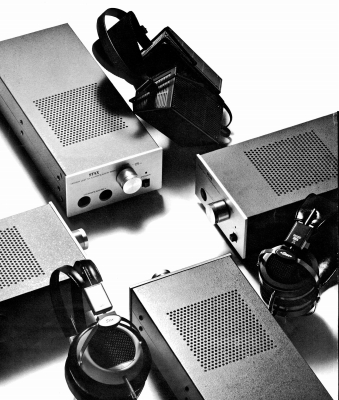 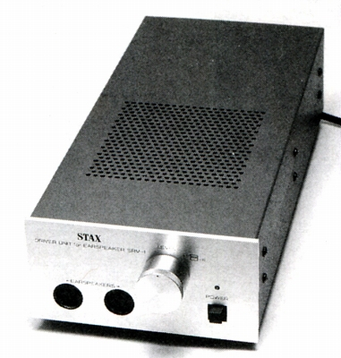
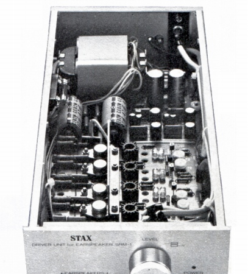
1979年発売、当時35,000円。
■周波数帯域
5-20,000Hz+0-4dB以内（30V,SR-Σ1台使用時）
■増幅度 60dB
■高調波歪率 0.05％/1kHz,100V,SR-Σ1台使用時
■入力インピーダンス 50kΩ
■入力レベル 100mW
■最大出力電圧 410Vr.m.s/1kHz
■バイアス電圧 230V
■電源電圧
AC100V 50/60Hz
■消費電力 20W
■重量 2.0kg
■サイズ W150×H87×D370mm（たて使用時
W75×H162×D370mm）
■備考 ゴム足を付け替えて、たて使用可。
SRD-X
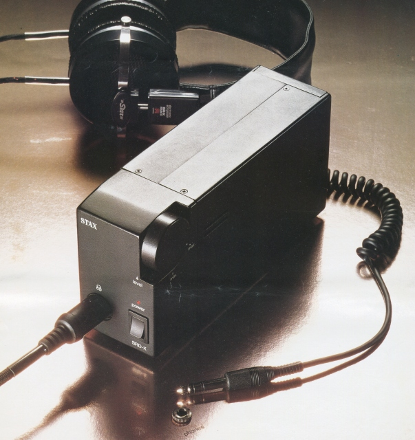
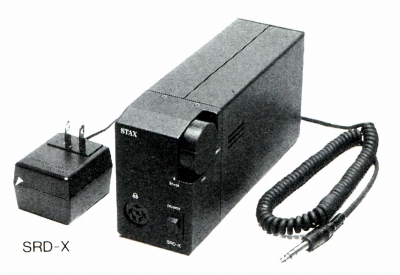 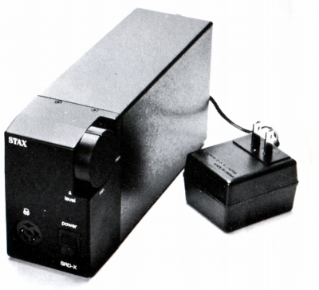
1979年発売、当時14,000円。
このモデルのみ、ダイナミック型ヘッドフォン用ジャックに接続。
時代背景からみて、テープレコーダーとの組合せを想定したものか？
なおSRD-Xシリーズの回路については不明な点が多いが、アダプターと共通の
「SRD」の型番が示すとおり、音楽信号昇圧過程ではトランスを使用している。
■周波数帯域 20-20,000Hz +0
-2dB（100Vr.m.s）
■増幅度 60dB
■高調波歪率 0.03％/1kHz,100V
■入力インピーダンス 300Ω/1kHz
■入力レベル 100mV
■最大出力電圧 210Vr.m.s/1kHz
■バイアス電圧 230V
■電源電圧
AC100V 50/60Hz /単2電池8本
■消費電力 ?W/AC使用時 1.2W/電池使用時
■重量 725g（電池含まず）
■サイズ
W60×H100×D195mm
■備考 側面のネジで左右のバランス調整可
外装は、プラスチックのものと金属のものがあるようで、
上記のスペックは、プラスチック外装のものと思われる。
発売時のカタログでは、重量
800g（電池含まず）なっている。
乾電池の持続時間は連続約25時間（アルカリ電池）。
SRM-1/MK2
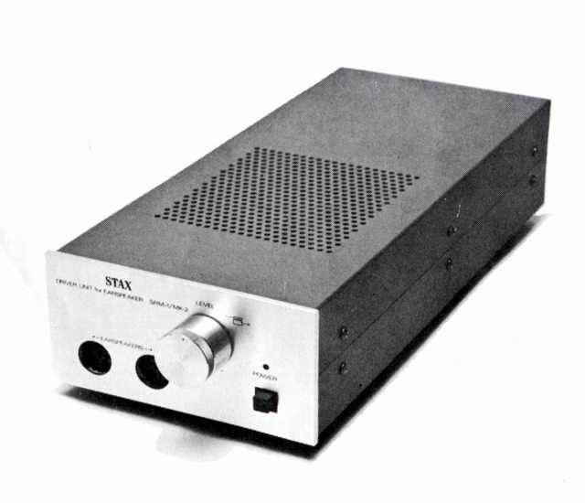
1982年発売、当時47,000円。
■周波数帯域
D.C-20,000Hz±1dB以内（30V,SR-Λ1台使用時）
■増幅度 60dB
■高調波歪率 0.05％/1kHz,100V,SR-Λ1台使用時
■入力インピーダンス 50kΩ
■入力レベル 100mW
■最大出力電圧 370Vr.m.s/1kHz
■バイアス電圧 230V
■電源電圧
AC100V 50/60Hz
■消費電力 33W
■重量 2.0kg
■サイズ W150×H87×D370mm
■備考
シャーシ及び電子パーツから鉄などの磁性体を排除。
プリント基盤はガラスエポキシ製。
信号系の配線にLC-OFCを使用。
入力にパラ接続された出力端子を装備。
�A旧会社（スタックス工業�且梠縺jのプロバイアス用のドライバー
この時代のものとなると例外（SRM-T2とポータブルタイプ)を除けば、現在の会社（�泣Xタックス）でメンテナンス可能。
SRM-1/MK2PRO
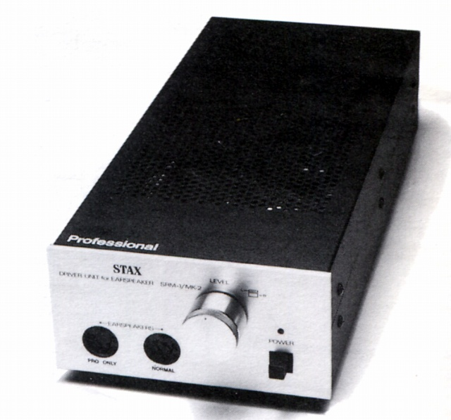
1982年発売、当時55,000円。
■周波数帯域
D.C-20,000Hz±1dB以内（30V,SR-Λ1台使用時）
■増幅度 60dB
■高調波歪率 0.05％/1kHz,100V,SR-Λ1台使用時
■入力インピーダンス 50kΩ
■入力レベル 100mW
■最大出力電圧 370Vr.m.s/1kHz
■バイアス電圧 230V/580V
■電源電圧
AC100V 50/60Hz
■消費電力 33W
■重量 2.0kg
■サイズ W150×H87×D370mm
■備考
シャーシ及び電子パーツから鉄などの磁性体を排除。
プリント基盤はガラスエポキシ製。
信号系の配線にLC-OFCを使用。
入力にパラ接続された出力端子を装備。
SRD-X Professional
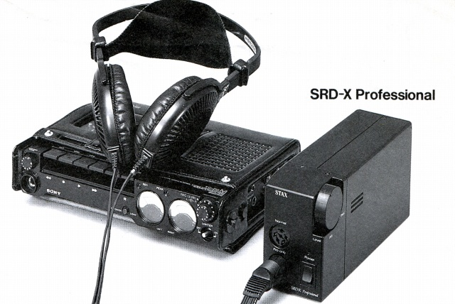
1986年発売、当時19,800円。
SRD-Xの後継モデル。
信号昇圧用のトランスの巻線にはPCOCCを使用していたようだ。
■周波数帯域 20-20,000Hz +0
-2dB（100Vr.mr.s）
■増幅度 63dB
■高調波歪率 0.02％/1kHz,100V
■入力インピーダンス 12.5kΩ/1kHz
■入力レベル 70mV
■最大出力電圧 380Vr.m.s/1kHz
■バイアス電圧 230V/580V
■電源電圧
AC100V 50/60Hz /単2電池8本
■消費電力 ?W/AC使用時 2.0W/電池使用時
■重量 715g（電池含まず）
■サイズ
W60×H100×D195mm
■備考 側面のネジで左右のバランス調整(±3dB)可能。
取扱説明書では、増幅度 57.3dB、消費電力 1.5W/電池使用時
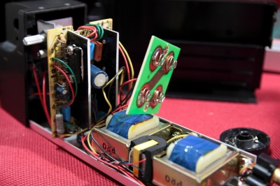
内部画像 信号昇圧用トランスが見える。管理人所有のSRD-4PROと同じものだろうか？
内部画像は「蒼乃雑記」の蒼乃さんより提供していただきました。
SRD-P
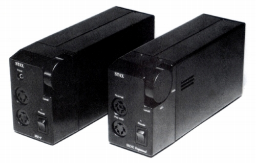
(左側のモデル、右はSRD-X Professional）
1987年頃？発売、輸出専用モデル。
SRD-X
Professionalのノーマルバイアスコンセントを廃した廉価版モデル。
■周波数帯域 20-20,000Hz
■増幅度 63dB
■入力レベル 70mV
■最大出力電圧 380V
■バイアス電圧 580V
■電源電圧
単2電池8本
■消費電力 ?W/AC使用時 2.0W/電池使用時
■重量 715g（電池含まず）
■サイズ
W60×H100×D195mm
■備考 正面パネルにステレオミニジャックの入力端子あり。
SRD-Pの資料は「蒼乃雑記」の蒼乃さんより提供していただきました。
SRM-T1
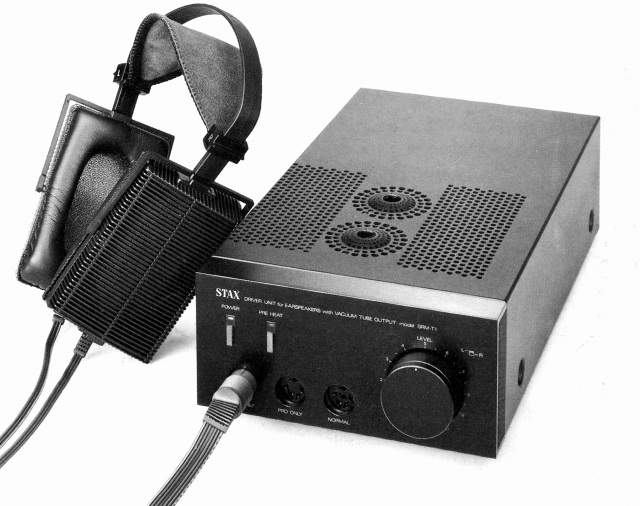
1987年発売、当時80,000円。
■周波数帯域
D.C-20,000Hz±1dB以内（30V,SR-ΛSignature1台使用時）
■増幅度 60dB
■高調波歪率 0.02％/1kHz,100V,SR-ΛSignature1台使用時
■入力インピーダンス 50kΩ
■入力レベル 100mW
■最大出力電圧 300Vr.m.s/1kHz
■バイアス電圧 230V/580V×2
■電源電圧
AC100V 50/60Hz
■消費電力 49W/通常使用時 16W/PREHEAT時
■重量 3.4kg
■サイズ
W195×H103×D375(ツマミ20、RCAジャック10を含む）mm
■備考
初段にデュアルFET、2段目に6FQ7を使用。
信号系の配線にPC-OCCを使用。
入力にパラ接続された出力端子を装備。
パワースイッチONですぐ音出しのできるプリヒートスイッチ付き。
なお真空管は発売時の資料では、アメリカのGoldAero製となっていた。
SRM-Monitor
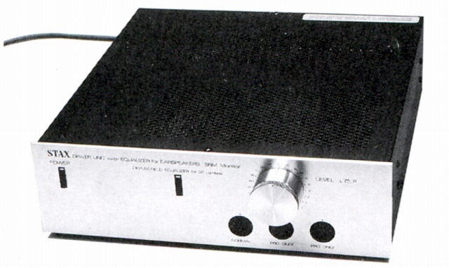
1988年発売、当時140,000円。
当時STAXが「AUDIO/STAX」ブランドで扱っていたドイツの
Audio
Electronics社製作のダミー・ヘッド録音のCDをヘッドフォンで
再生した際の補正用イコライザーを内蔵したドライバー。
ドライバーとしてはSRM-1/MK2PROに準ずるようだ。（イコライザーについてはED-1参照）
当時、ドイツではダミーヘッドによる集音技術が比較的盛んに行われていたようだ。
STAX神話で良く登場するダイムラー・ベンツの測定でも「アーヘナー」という
ダミーヘッドが用いられていたそうだ。このドライバーもドイツを中心に流通した模様。
市販モデルではなく、学校・図書館などの視聴覚システム向けにSRM-MLという
モデルが存在していた。資料ではアナログディスクプレイヤーと直結されていた
らしく、フォノ・イコライザー内蔵だった可能性が高い。SRM-MonitorはSRM-ML
のシルエットと似ており、シャーシを流用した可能性がある。
■周波数帯域
D.C-20,000Hz±1dB
■増幅度
■歪率 0.002％（100Hz） 0.003％（1,000Hz）
0.004％（10,000Hz/1W）
■入力レベル 100mW
■SN比 104dB(IHF-A)
■バイアス電圧 230V/580V×2
■電源電圧
■消費電力
■重量 5.0kg
■サイズ W300×H97×D340mm
■備考
入力端子はRCAコネクターとXLR（バランス）の切替式。
イコライザーのON/OFF可能、イコライザー・アウト端子（アンバランス）あり。
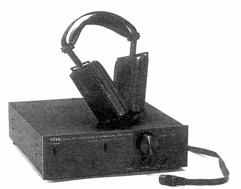 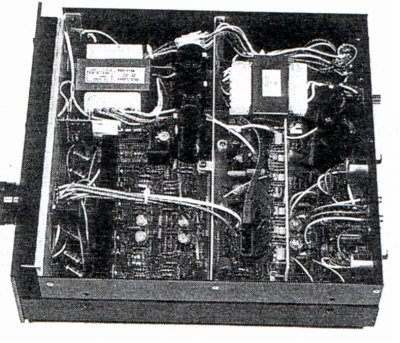
（雑誌に掲載されていたブラック塗装の個体と、その内部。電源トランスが2台ある）
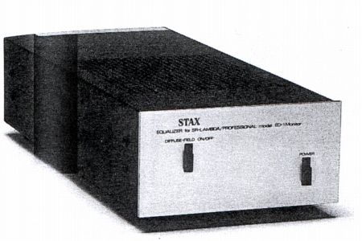
（通常のドライバーユニット等に向けて、イコライザー単体のユニットED-1も用意された。）
SRM-1/MK2-PP
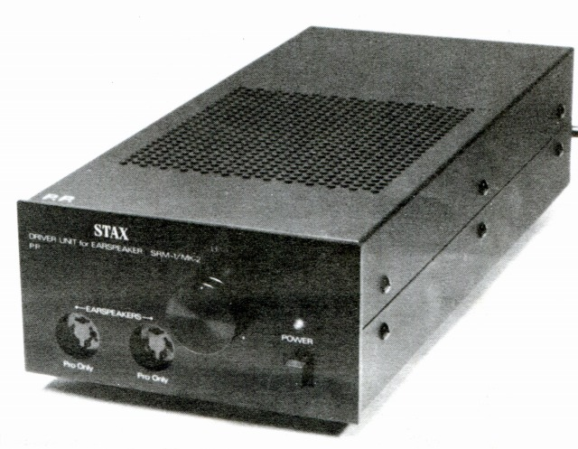
1989年発売、当時65,000円。
内部配線にPC-OCCアズキャスト線を使用したSRM-1/MK2PROの改良モデル。
■周波数帯域
D.C-20,000Hz±1dB以内（30V,SR-Λ（ラムダ）Professional台使用時）
■増幅度 60dB
■高調波歪率 0.05％/1kHz,100V,SR-Λ（ラムダ）Professional台使用時
■入力インピーダンス 50kΩ
■入力レベル 100mW
■最大出力電圧 370Vr.m.s/1kHz
■バイアス電圧 580V×2
■電源電圧
AC100V 50/60Hz
■消費電力 33W
■重量 2.0kg
■サイズ W150×H87×D370mm
■備考
配線材はSRM-1/MK2PROに準ずると思われる。
アズキャスト線は一般配線材のようなダイス加工による結晶の変形を
嫌い、最初から（このモデルでは1.5�o）細い状態で鋳った線材。
同ブランドの中級以上のドライバーで、従来のバイアス（230V)コンセントを
廃止した最初の製品。
SRM-X PRO
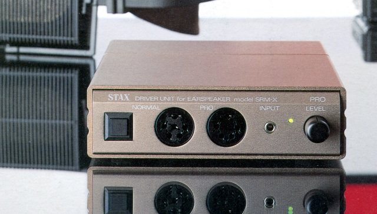
1990年発売、当時45,000円。
今のところ、単体発売された最後のポータブル型ドライバー。
■周波数帯域 DC-20,000Hz +0
-3dB
■増幅度 60dB
■高調波歪率 0.08％/1kHz,100V
SR-ΛSignature1台使用時
■入力インピーダンス 50kΩ
■入力レベル 100mV
■最大出力電圧 280Vr.m.s/1kHz
■バイアス電圧 230V/580V
■電源電圧
DC12V(ACアダプター/Nicadバッテリー）
■消費電力 3W/DC12V
■重量 470g（電池含まず Nicadバッテリーパック
430g）
■サイズ W130×H37×D134mm
■備考
フロントパネルのミニジャックは、リアパネルの入力と
パラレル接続されており、入力端子と同時にパラレルアウトと
しても機能する。
オプションでバッテリーパック（BPS-600
11,000円）とキャリングケース(1,800円）あり。
昇圧にトランスを用いたSRD-Xシリーズよりは、消費電力が大きい為か、バッテリーは
8時間充電で、使用可能時間は約2時間となっている。
SRM-Xs
1990年、エレクトレット型のSR-80PROとセットで発売、単体での販売は無し。
エレクトレット型用の為、コストダウンでバイアス電源回路は無く、現行のモデルには使用できない。
当時の雑誌記事ではSRM-X
PROの簡略版だそうだ。
バイアス電源がない他はSRM-Xhに準ずる仕様らしい。
SRM-Xh
1992年、SR-Λ（ラムダ）Spritとセットで発売、単体での販売は無し。
「SRM-X
PRO」用のバッテリーパック（BPS-600 11,000円）が装着可能。
■周波数帯域
DC-20,000Hz +0 -3dB
■増幅度 60dB
■高調波歪率 0.05％/1kHz,100V SR-Λ（ラムダ）Sprit
1台使用時
■入力インピーダンス 50kΩ
■入力レベル 100mV
■最大出力電圧 280Vr.m.s/1kHz
■バイアス電圧 580V
■電源電圧
DC12V(ACアダプター/Nicadバッテリー）
■消費電力 4W/DC12V
■重量 500g（電池含まず Nicadバッテリーパック
430g）
■サイズ W132×H38×D132mm
■備考
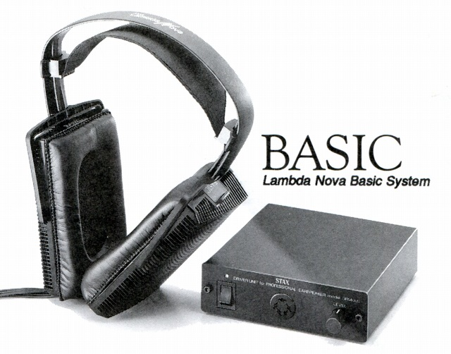
1994年には、Lambda Nova Basicとセットでも発売された。
SRM-T1S
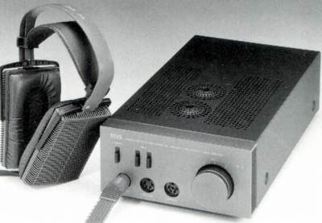 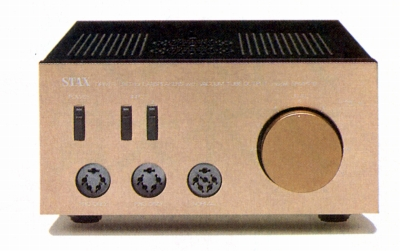
1993年発売、当時90,000円。
SRM-T1の後継モデル。
■周波数帯域
D.C-44,000Hz-1.5dB（100Vr.mr.s,SR-ΛSignature1台使用）
■増幅度 60dB
■高調波歪率 0.02％/1kHz,100V,SR-ΛSignature1台使用時
■入力インピーダンス 50kΩ（バランス 50kΩ×2)
■入力レベル
■最大出力電圧 300Vr.m.s/1kHz
■バイアス電圧 230V/580V×2
■電源電圧
AC100V 50/60Hz
■消費電力 49W/通常使用時 16W/PREHEAT時
■重量 3.4kg
■サイズ
W195×H103×D375(ツマミ20、RCAジャック10を含む）mm
■備考 初段にデュアルFET、2段目に6FQ7を使用。
パラ接続の出力端子、プリヒートスイッチは無くなった。
入力端子が2系統になり、2系統目はRCAコネクターとXLR（バランス）の切替式。
バランス入力は3番HOT。
なお、1996年頃からパラレル出力端子が復活したモデルが販売された。
SRM-3
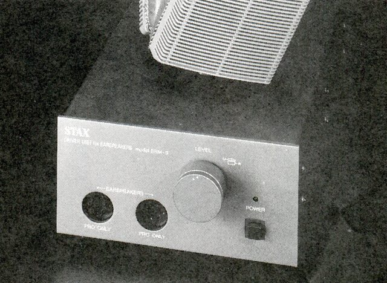
1994年発売、当時45,000円。
ポジション的にSRM-1/MK2PROの後継モデル。
ただし最大出力電圧などは非力。
■周波数帯域
D.C-20,000Hz±1dB
■増幅度 60dB
■高調波歪率 0.05％/1kHz,100V,SR-Λ（ラムダ）Professional台使用時
■入力インピーダンス 50kΩ
■入力レベル 100mW
■最大出力電圧 250Vr.m.s/1kHz
■バイアス電圧 580V×2
■電源電圧
AC100V 50/60Hz
■消費電力 28W
■重量 2.6kg
■サイズ W150×H87×D370mm
■備考
入力にパラ接続された出力端子を装備。
Lambda Nova Classicと組合せで「Lambda Nova Classic
System」としても販売
基本回路はSRM-Xhと同じ。大型電源と高級アッテネーター等で差別化している。
SRM-T1W
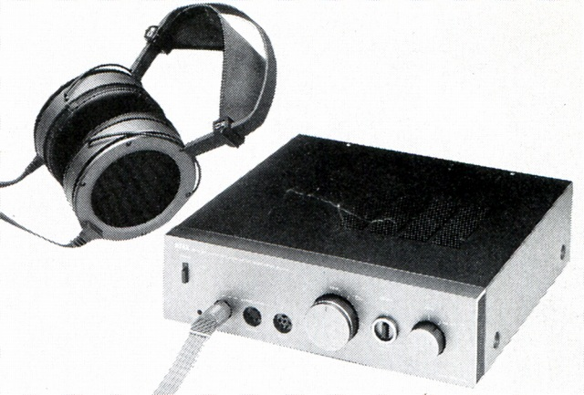
1994年発売、当時120,000円。
昼はラウドスピーカー、夜はイヤスピーカーがコンセプトの
パッシブコントローラー機能付きのドライバー。
■周波数帯域
D.C-44,000Hz-1.5dB（100Vr.mr.s,SR-ΛSignature1台使用）
■増幅度 60dB
■高調波歪率 0.02％/1kHz,100V,SR-ΛSignature1台使用時
■入力インピーダンス 50kΩ（バランス 50kΩ×2)
■入力レベル
■最大出力電圧 300Vr.m.s/1kHz
■バイアス電圧 230V/580V×2
■電源電圧
AC100V 50/60Hz
■消費電力 45W
■重量 4.2kg
■サイズ W320×H103×D305mm
■備考
ドライバーユニットとしては基本的にSRM-T1Sに準ずる。
ただしプロバイアス（580V)コンセントの1系統にバイアス電圧可変機能あり。
能率の異なるイヤスピーカーの音量をそろえ、比較可能。
入力回路：3系統（内1系統はバランス入力可能）
パッシブコントローラーとして使用可能。
旧会社から新しい�泣Xタックスに引き継がれた機種
Lambda Nova Signatureと組合せで「System-W
（組合価格\138,000)」としても販売
SR-404と組合せで「System-W
mk�U（組合価格\138,000)」としても販売
SRM-T2
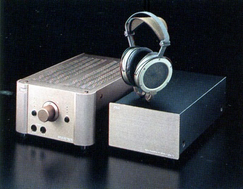 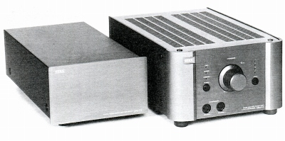
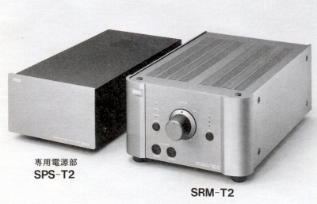
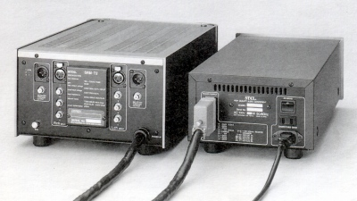
1994年発売、当時460,000円
初段に金属の筒でシールドした双三極管7308、バッファー+2段目にMOS-FET日立2SK216、
出力段にEL34（6CA7）を三極管接続したハイブリット設計。
1kHzの最大出力電圧630Vr.m.sと、当時のSRM-T1S(300ＶVr.m.s）の2倍以上
（10kHzでは100Vr.m.s→400Vr.m.sと4倍）の強力なドライバー。
■周波数帯域
1-70,000Hz（100r,m,s,出力、SRーΩ 一台使用時）
■増幅度 60dB
■高調波歪率 0.01％以下/630V
r.m.s.出力（1kHz、SR-Ω一台使用時）
■入力インピーダンス 50kΩ
■入力レベル
■最大出力電圧 630Vr.m.s./1kHz
■バイアス電圧 580V×2
■電源電圧
AC100V 50/60Hz
■消費電力 200W
■重量 本体6.0kg 電源(SPS-T2)12.0kg
■サイズ
本体W262×H162×D438mm
電源W212×H138×D420mm
■備考 入力回路：4系統（内1系統はバランス 3番HOT）
出力回路：バランス
/RCA各1系統
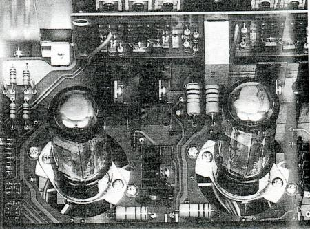
なお出力段の真空管は発売時の雑誌記事では、アメリカのGoldAero製のプレミアムグレードとなっていた。
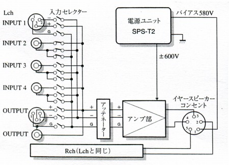
(システム構成 セレクターはホット、コールド、グランドすべて切り替える。）
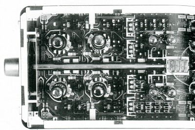 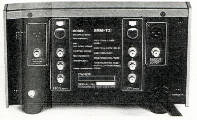
（入・出力端子、ボリュウムの配置など徹底的なシンメトリーな構成が取られている。）
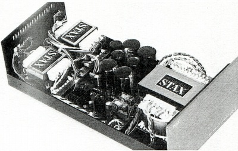 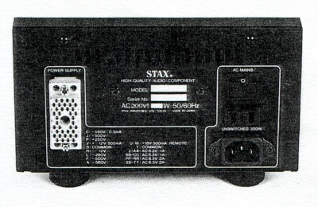
（電源部SPS-T2）
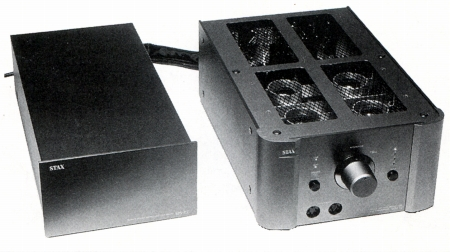
(発売当時の雑誌に掲載された画像 最終プロトタイプか？製品版と天板などが違う）
SRM-001
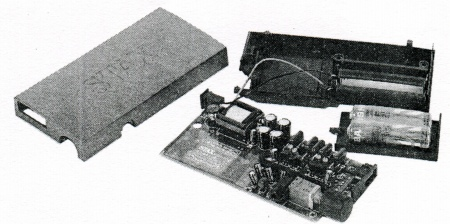
1995年、Ｓ-001とセットでSR-001として発売。単体での販売は無し。
■周波数帯域 5-20,000Hz+0 -3dB（10Vr.mr.s,S-001
1台使用）
■増幅度 54dB
■高調波歪率 0.1％/1kHz,100V,S-001
1台使用時
■入力インピーダンス 10kΩ
■入力レベル 100mV
■最大出力電圧 240Vr.m.s/1kHz
■バイアス電圧 580V
■電源電圧
AC100V 50/60Hz /単3電池2本
■消費電力 1.3W/AC使用時 0.8W/電池使用時
■重量 102g（電池含まず）
■サイズ
W60×H24×D120mm
■備考 電池寿命はマンガンで2〜3時間、アルカリで5〜6時間程度
�B現在の会社（�泣Xタックス）のドライバー
SRM-007t
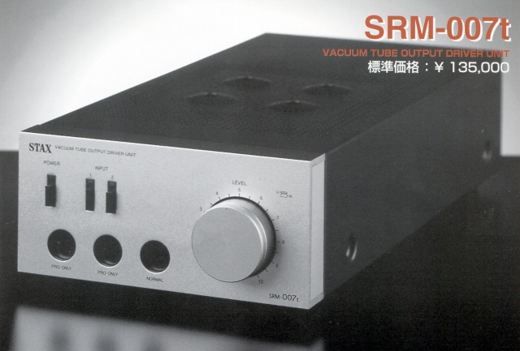
1998年発売、当時135,000円。
双三極管のパラレル接続となった真空管ハイブリットドライバーの上位機種。
最大出力電圧が従来モデルの300Vから340Vへ強化された。
■周波数帯域
DC-70,000Hz
■増幅度 60dB
■高調波歪率 0.01％/1kHz,100V
■入力インピーダンス 50kΩ（バランス 50kΩ×2)
■入力レベル 100mV
■最大出力電圧 340Vr.m.s/1kHz
■バイアス電圧 230V/580V×2
■電源電圧 AC100V
50/60Hz
■消費電力 55W
■重量 4.7kg
■サイズ W195×H103×D420mm
■備考
入力回路：2系統（内1系統はバランス入力可能)
入力にパラ接続された出力端子を装備
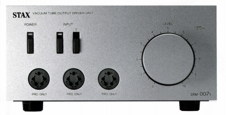
2004年１１月頃出荷分から、230Vコンセントは廃止され、580V×3となった。
SRM-006t
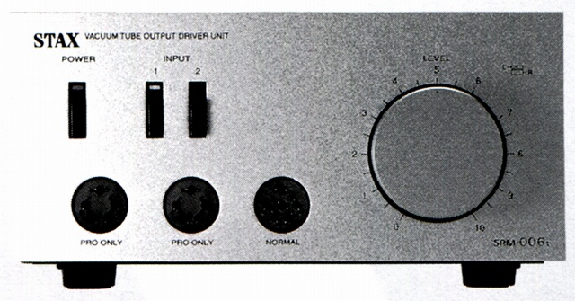
1999年発売、当時78,000円。
SRM-T1Sの後継モデル。
■周波数帯域
DC-44,000Hz
■増幅度 60dB
■高調波歪率 0.02％/1kHz,100V
■入力インピーダンス
50kΩ（バランス 50kΩ×2)
■入力レベル 100mV
■最大出力電圧 300Vr.m.s/1kHz
■バイアス電圧 230V/580V×2
■電源電圧 AC100V
50/60Hz
■消費電力 49W
■重量 3.4kg
■サイズ W195×H103×D375mm
■備考
入力回路：2系統（内1系統はバランス入力可能)
入力にパラ接続された出力端子を装備
SR-404と組合せで「SRS-4040」としても販売
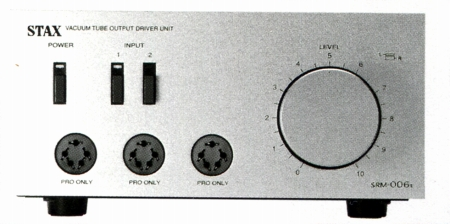
2004年１１月頃出荷分から、230Vコンセントは廃止され、580V×3となった。
SRM-313
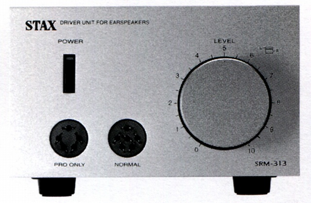
1999年発売、当時40,000円。
SRM-3の後継モデル。
有限会社時代になり、比較的低価格で導入できたアダプター等がなくなった為、
SRM-3で廃止されたノーマルバイアス（230Ｖ）コンセントが復活した。
■周波数帯域 DC-48,000Hz +0
-1.5dB（40Vr.mr.s）
■増幅度 60dB
■高調波歪率 0.01％/1kHz,100V
■入力インピーダンス
50kΩ
■入力レベル 100mV
■最大出力電圧 350Vr.m.s/1kHz
■バイアス電圧 230V/580V
■電源電圧 AC100V
50/60Hz
■消費電力 29W
■重量 2.9kg
■サイズ W150×H100×D370mm
■備考
入力にパラ接続された出力端子を装備
SR-303と組合せで「SRS-3030」としても販売
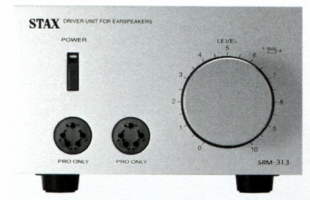
2004年１１月頃出荷分から、230Vコンセントは廃止され、580V×2となった。
SRM-212
1999年、SR-202とセット(SRS-2020)で発売、単体での販売は無し。
カタログによれば基本的な回路はSRM-313と、同等だそうだ。
コンセントの1系統化、ACアダプター利用などによるコストダウンモデル。
■周波数帯域 DC-20,000Hz +0
-1.5dB（40Vr.mr.s）
■増幅度 60dB
■高調波歪率 0.01％/1kHz,100V
■入力インピーダンス50kΩ/1kHz
■入力レベル 100mV
■最大出力電圧 380Vr.m.s/1kHz
■バイアス電圧 230V/580V
■電源電圧
DC12V(ACアダプター使用）
■消費電力 4W
■重量 500g
■サイズ W132×H38×D132mm
■備考
Ｓ-001MK2とセットでSR-005としても販売。
SRM-717
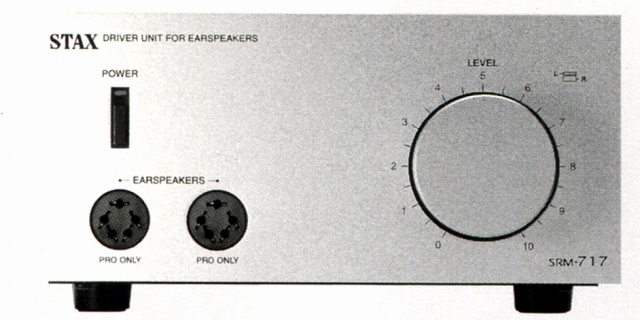
2000年発売、当時120,000円。
真空管ハイブリットドライバーSRM-T1の登場以降、中堅機扱いとなっていたトランジスター・ドライバーに登場した上位機種。
最大出力電圧450Vr.m.s/20-10kHzという強力機種。
■周波数帯域 DC-100,000Hz +0 -3dB（SR-404またはSR-007
1台使用時）
■増幅度 60dB
■高調波歪率 0.01％/1k-10kHz,100Vr.m.s（SR-404またはSR-007
1台使用時）
■入力インピーダンス
50kΩ（バランス 50kΩ×2)
■入力レベル 100mV
■最大出力電圧 450Vr.m.s/20-10kHz
■バイアス電圧 580V×2
■電源電圧 AC100V
50/60Hz
■消費電力 45W
■重量 5kg
■サイズ
W195×H103×D420(ツマミ20、RCAジャック10を含む）mm
■備考
入力端子はRCAコネクターとXLR（バランス）の切替式。
入力にパラ接続された出力端子を装備。
内部ボリュームのパスが可能。
この文書を作成するにあたって、�鬼TAXよりSRM-Xhのスペック等について貴重な情報をいただきました。どうもありがとうございます。
STAXのインデックスヘ